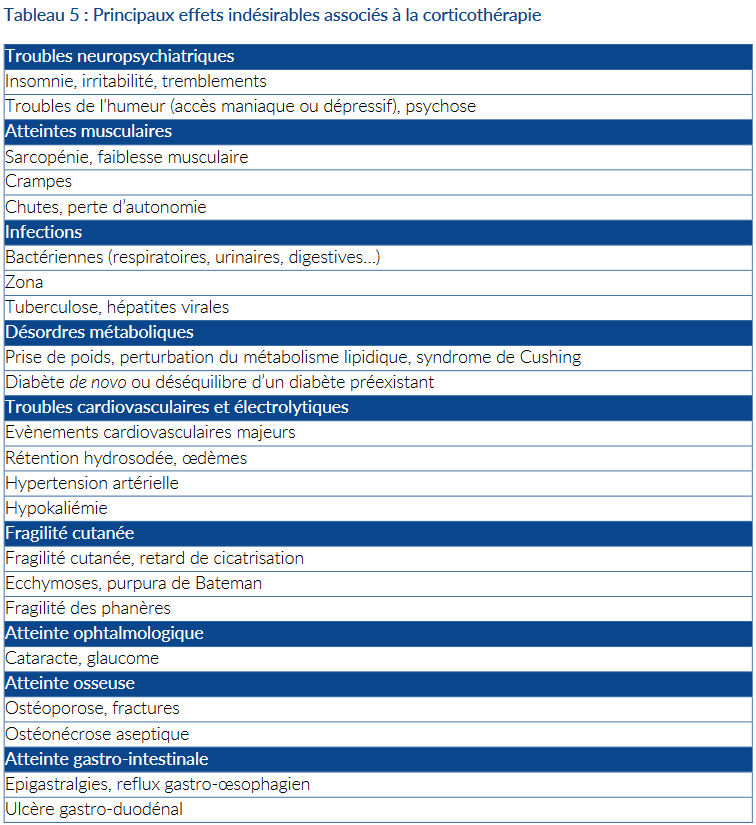
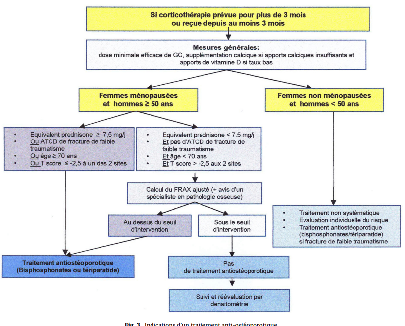
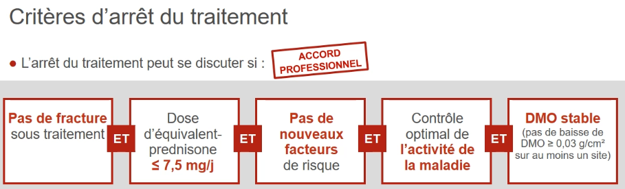

Bilan à l'initiation d'une probable corticothérapie prolongée
Prévention de l'ostéoporose cortico-induite :
- La meilleure mesure préventive = dose minimale efficace le moins longtemps possible
- Envisager tous les moyens d'épargne cortisonique : injections intra-articulaires, voie inhalée
- Envisager un traitement de fond
- Evaluation du risque fracturaire :
- Ostéodensitométrie = obligatoire et remboursée pour toute corticothérapie > 7.5mg pendant plus de 3 mois
- Mais chez les adultes jeunes < 50 ans elle est souvent insuffisance pour prédir le risque de fracture
- Donc il ne faudra pas oublier le reste ci dessous
- Facteurs de risques :
- ! Le plus important = Fractures personnelles ostéoporotiques !
- Interrogatoire
- Dépistage des fractures vertébrales :
- perte de au moins 4cm par rapport à la taille de 20 ans
- perte de au moins 2cm pendant le suivi
- ATCD de fracture de fragilité du col fémoral chez un parent du premier degré
- Tabagisme, alcoolisme
- Ménopause précoce (< 40 ans)
- Immobilisation prolongée
- IMC < 19
- Endocrinopathie : Hyperthyroïdie, Hyperparathyroïdie, orchidectomie, ovariectomie, hypercorticisme
- Médicaments : Corticothérapie au long cours, diurétiques hypercalciuriants (de l'anse), anti-oestrogène, anti androgène, anti-aromatase
- Risque de chute
- Dosage de la vitamine D, objectif 30 ng/mL = 75 nmol/L
- Eliminer autres ostéopathies fragilisantes (bilan bio)
- Questionnaire des apports calciques GRIO : Apports calciques suffisants (800-1200mg par jour soit 4 produits laitiers)
- Traitements :
- Biphosphonates
- Teriparatide en 1ère intention si entre dans l'AMM (2 fractures vertébrales) car marche mieux
- Durée de traitement
- 2 ans pour les biphosphonates et 18 mois pour le teriparatide
- Sauf si fracture à faible cinétique ou DMO basse : dans ce cas 3 à 5 ans comme d'habitude
- Dans tous les cas il faut réévaluer la nécessiter de poursuite du traitement à l'issue de la première séquence thérapeutique avec un rhumatologue
- Ostéodensitométrie dans le suivi
- Tous les ans si pas de traitement
- Après la fin d'une séquence thérapeutique sinon
Prévention des complications cardiovasculaires et du diabète :
- Antécédents personnels et familiaux
- Facteurs de risque cardiovasculaires : Poids, IMC, tension, glycémie à jeun, hbA1c, bilan lipidique, tabagisme.
- ECG (si FDR cardiovasculaires)
- SCORE 2
- Correction de ces FDRs
Prévention des complications infectieuses :
- Recherche de foyer infectieux :
- Vaccination grippe, pneumocoque, ZONA (SHINGRIX), MAJ du calendrier vaccinal
- ! contre indication aux vaccins vivants atténués si dose > 10mg/j = BCG, fièvre jaune,..
- IGRA si contact avec TM non ou insuffisamment traitée
- Sérologies hépatiques
- Radiographie pulmonaire
- Traitement antiparasitaire pour tout patient ayant séjourné dans une zone endémique d'anguillulose maligne = régions tropicales et subtropicales, certaines zones d’Europe du Sud, notamment au Portugal
Prévention des complications digestives :
- Antécédent d'ulcère ?
- ATCDs hépatiques ?
Prévention des complications psychiatriques :
Education thérapeutique :
- Conseils concernant l'activité physique
- Conseils diététiques : restriction d'apports sucres rapides, limitation sel, apports protidiques et calciques suffisants
- +/- consult diet
- Arrêt du tabagisme


